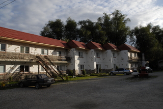
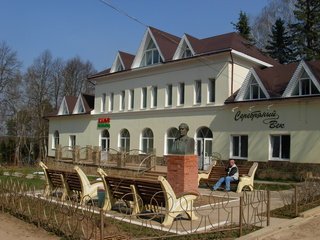
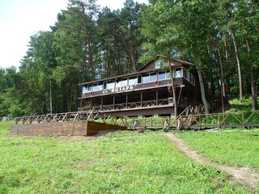
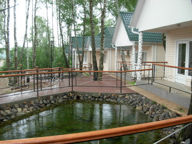
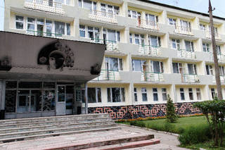
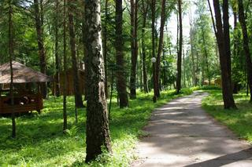
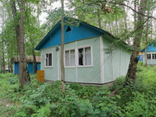
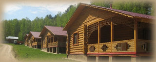
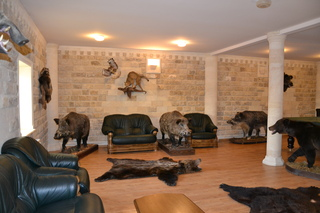

Туризм > Места отдыха и общественного питания


Гостиницы и базы отдыха
Гостиница "Таруса"

ул.К.Либкнехта,11\20,тел.2-53-86, tarusa.ru/hotel-tarusa/
Пансионат "Якорь"
ул.Декабристов,4,тел.2-55-81, tarusa-yakor.ru
Дом Отдыха "Серебряный век"
ул.Маяковского,5,тел.2-27-83, www.tarusa-hotel.ru
Мотель "Ольгинка"

с.Волковское,тел.886-38-78, www.motel-olginka.ru
База отдыха "Янтарь"
с.Волковское,тел. 8(919)970-03-66, 8(905)539-81-00, www.jantari.ru
Усадьба "Отрада"
с.Волковское,тел.971-87-27, park-otrada.ru
ОТЭК "Таруса"
п.Строитель,тел.3-40-33, www.tarusa.ru/otek-tarusa
База отдыха "Крутой Яр"
с.Волковское,тел.3-17-49, www.krutoyar.ru
База отдыха "Митино"
с.Волковское,тел.3-10-48, kbal.ru/index.php?dn=article&to=art&id=1
База отдыха "Бобровый мыс"
с.Ильинское, тел.8-915-117-81-32, www.bmhotel.ru
ПТБ "Элида"
с.Барятино,тел.8-903-810-21-11
Пункты питания
Ресторан "Якорь"
ул.Декабристов,4, тел.2-55-81, http://tarusa-yakor.ru/
Кафе "Ока"
ул.Декабристов,9
"Чебуречная"
ул.Комсомольская,13
Кафе "Жар-Пицца"
ул.Октябрьская,2/1
Бар "Золотая кружка"
ул.Декабристов,20
Ресторан "Город N"
пр.Пушкина,2 тел.2-52-38